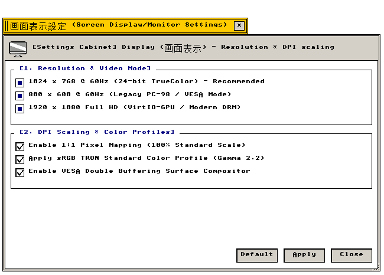

画面表示設定 (Display)
解像度制御 · TrueColor フレームバッファ · VirtIO-GPU · マルチモニタ
画面解像度、高DPIスケーリング、グラフィックスドライバ、マルチモニタ空間配置の設定仕様
"Framebuffer video modes, high-DPI rasterization matrices, and hardware-accelerated VirtIO 2D blitters."
← 設定フォルダ (Settings Folder Index)
画面表示設定（Display） — 画面解像度、TrueColor色深度、VirtIO-GPUアクセラレーション、マルチモニタ空間トポロジを管理する設定アプレット。
"Display adapter configuration: video mode switching, color depth allocation, and multi-head display coordination."
画面プレビュー (Screen Preview)

実機描画フレームバッファより自動抽出された透過画面表示設定ウィンドウ (Native Headless GDEV Capture)
概要 (Overview)
画面解像度、TrueColor色深度、VirtIO-GPUアクセラレーション、マルチモニタ空間トポロジを管理する設定アプレット。
"Display adapter configuration: video mode switching, color depth allocation, and multi-head display coordination."
基本操作仕様 (Operational Specifications)：
・[標準 (Default)]：工場出荷時の初期設定に復元します。
・[適用 (Apply)]：設定変更を確定し、システム状態へ反映します。
・[閉じる (Close)]：設定ウィンドウを破棄します（cls_wnd()）。
1. 画面解像度とフレームバッファ仕様 (Display Resolutions & Video Buffers)
利用可能なグラフィックス解像度およびTrueColorフレームバッファの設定仕様。
"Supported VESA/VirtIO raster dimensions and ARGB color depth parameters."
| 設定項目・機能名 |
動作概要と視覚仕様 (Functional Specification) |
技術仕様・幾何学構造 (Technical / C99 Definition) |
Standard Desktop: 1024×768 (VESA)
標準解像度 1024×768 |
標準的な4:3アスペクト比での表示。低負荷で安定した描画処理を提供します。 |
解像度: 1024×768 (4:3)
C99: g_state_display.checks[0] |
HiDPI Widescreen: 1280×800 (16:10)
ワイド解像度 1280×800 |
16:10ワイドスクリーン向け高精細表示。広大な作業領域を確保します。 |
解像度: 1280×800 (16:10)
C99: g_state_display.checks[1] |
Full HD Resolution: 1920×1080 (1080p)
フルHD解像度 1920×1080 |
1080p高解像度ディスプレイ向け表示モード。高密度マルチウィンドウ作業に適しています。 |
解像度: 1920×1080 (16:9)
C99: g_state_display.checks[2] |
32-bit ARGB TrueColor Driver
32ビット TrueColor ドライバ |
各色8ビット（256階調）＋8ビットアルファチャンネルによる1677万色フルカラー描画。 |
色深度: 32bpp (ARGB8888)
C99: g_state_display.checks[3] |
2. マルチディスプレイとGPUアクセラレーション (Multi-Monitor & VirtIO-GPU)
複数モニタの空間配置およびハードウェア仮想化GPUアクセラレーションの設定仕様。
"Multi-monitor desktop topology extensions and VirtIO-GPU 2D surface blitting acceleration."
| 設定項目・機能名 |
動作概要と視覚仕様 (Functional Specification) |
技術仕様・幾何学構造 (Technical / C99 Definition) |
Multi-Monitor Desktop Topology
マルチモニタ空間トポロジ |
プライマリモニタの右側または上部にセカンダリモニタを論理配置し、デスクトップ領域を拡張します。 |
トポロジ: 左右／上下デュアルサーフェス
C99: g_state_display.checks[4] |
VirtIO-GPU 2D Surface Blitter
VirtIO-GPU ハードウェア描画 |
矩形塗りつぶし・ビットマップ転送をホストGPU側へオフロードし、描画負荷を低減します。 |
ドライバ: src/drivers/virtio_gpu.c
C99: g_state_display.checks[5] |
3. 全設定パラメータ仕様一覧 (Configuration Parameter Specifications)
画面表示設定が提供するすべての設定要素、初期値、およびC99内部シンボル。
"Comprehensive parameter specification table: indexing all UI widget states, factory defaults, and underlying C99 data symbols."
| セクション |
パラメータ名 / UI要素 |
標準値 (Default) |
設定値 / 選択肢 |
C99 内部変数・シンボル |
| [1] 解像度・色深度 |
1024×768 (VESA) |
有効 (TRUE) |
チェックボックス |
g_state_display.checks[0] |
| [1] 解像度・色深度 |
1280×800 (16:10) |
有効 (TRUE) |
チェックボックス |
g_state_display.checks[1] |
| [1] 解像度・色深度 |
1920×1080 (1080p) |
有効 (TRUE) |
チェックボックス |
g_state_display.checks[2] |
| [1] 解像度・色深度 |
32-bit TrueColor |
有効 (TRUE) |
チェックボックス |
g_state_display.checks[3] |
| [2] 出力・GPU |
Multi-Monitor Topology |
有効 (TRUE) |
チェックボックス |
g_state_display.checks[4] |
| [2] 出力・GPU |
VirtIO-GPU Blitter |
有効 (TRUE) |
チェックボックス |
g_state_display.checks[5] |
| アクション制御 |
[ 標準 (Default) ] |
— |
初期設定へ復元 |
全フラグTRUEリセット |
| アクション制御 |
[ 適用 (Apply) ] |
— |
変更確定と再描画 |
is_dirty = FALSE, redraw_all_windows() |
| アクション制御 |
[ 閉じる (Close) ] |
— |
ウィンドウ破棄 |
cls_wnd(wnd) |
関連コンポーネント (Related Components)